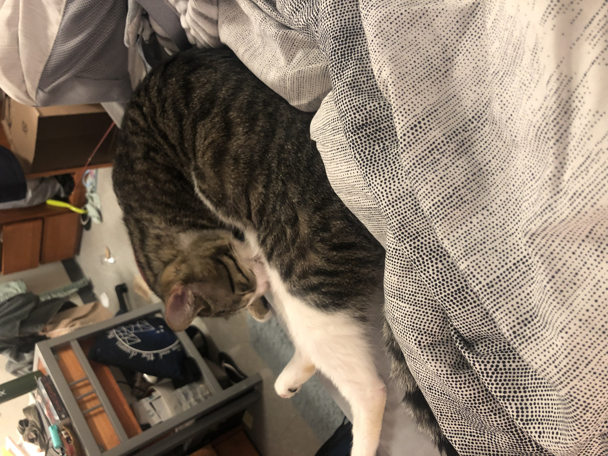

So first of all yes, my name is Cat, and yes I do also in fact have a cat. Back in March 2022 I adopted my two year old male, Bo.
Bo is a domestic shorthair ball of energy and volatile temprament. While I commonly warn folks not to be duped by his deceptive cuteness, I also feel like it’s my civic duty to share adorable cat photos of my buddy so here you go!
Evil Little Cute Fiend
